Übungsauftrag: einmal alles selbst machen
Hallo Edin, hier machst du einmal einen ganzen Auftrag selbst — vom Zettel bis zur bezahlten Rechnung, mit Unterschrift und allem, was die App kann. Neben jedem Bild steht genau, was du tippst, eintippst oder einsprichst. Dauert etwa 30 Minuten.
So liest du jeden Schritt:
- Tippen — auf den Knopf mit dem roten Rahmen und der Nummer 1 im Bild.
- 🎤 Einsprechen — diesen Satz ruhig und deutlich sagen.
- ⌨️ Eintippen — genau das ins genannte Feld schreiben.
Bevor du anfängst:
- Öffne die App am Handy: mhassistenz.de/demo/auftragszentrale (oder über den Link von Matthias). Halte den Zugangscode von Matthias bereit — den gibst du gleich in Teil 0 ein.
- Speichere die zwei Übungsbilder auf deinem Handy: antippen, dann lange auf das Bild drücken → „In Fotos sichern“ bzw. „Bild herunterladen“.
- Erkennt die App etwas anders als auf den Bildern? Kein Problem — einfach im Feld korrigieren. Genau dafür zeigt sie dir alles vorher.
- Alles ist erfunden. Es geht nichts raus, und es landet nichts bei Kunden.


0Zuerst: KI freischalten
Nur damit erkennt die App wirklich Fotos und Sprache. Einmal pro Gerät — danach bleibt es.
Knopf ganz unten auf der Startseite
Öffne die App, bleib auf Home und scroll ganz nach unten. Tippe auf KI-Funktionen freischalten 1.
Steht dort schon Zugangscode entfernen? Dann bist du schon freigeschaltet — weiter mit Teil A.
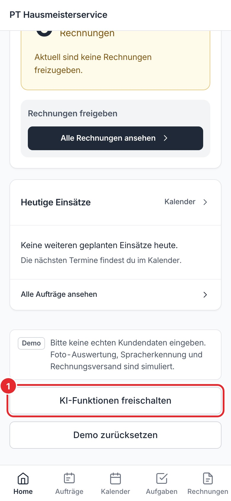
Code eingeben
| Zugangscode | den Code, den Matthias dir geschickt hat |
|---|
Genau so eingeben, wie er geschickt wurde — am besten kopieren und einfügen.
Tippe auf Freischalten 2.
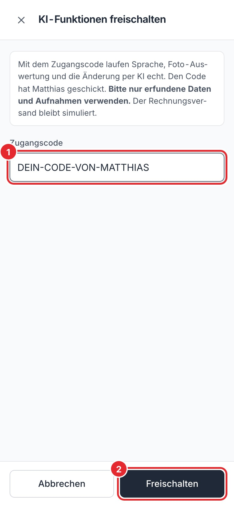
Fertig freigeschaltet
Unten steht jetzt Zugangscode entfernen und im Kasten darüber „laufen über echte Dienste“. Das heißt: es klappt. Nicht auf „Zugangscode entfernen“ tippen.
Kommt „Der Code stimmt nicht“: nochmal genau eingeben oder Matthias Bescheid sagen.
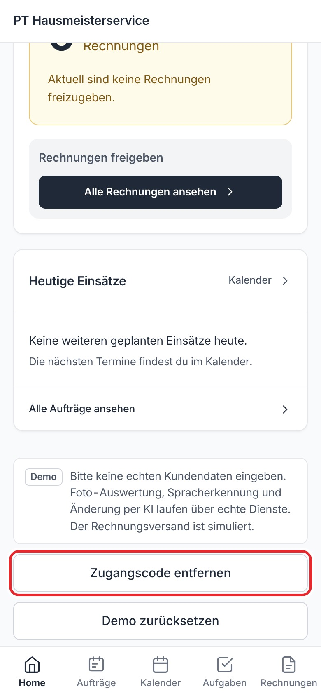
AErster Auftrag — per Foto
Du legst den Diakonie-Auftrag vom Übungszettel an.
Auftrag erfassen
Tippe auf Auftrag erfassen 1.
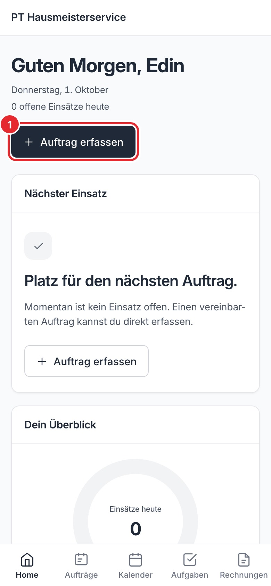
Weg wählen: Foto
Tippe auf Foto / Screenshot 1.
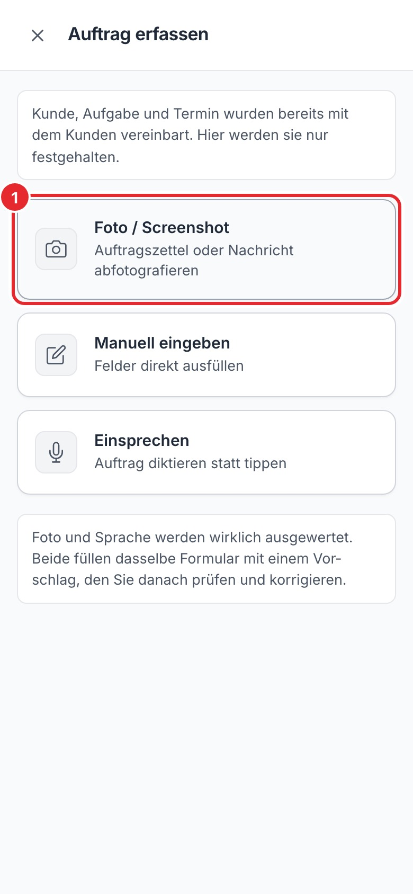
Übungszettel nehmen
Tippe auf Aus Galerie wählen 2 und nimm den Übungszettel, den du oben gespeichert hast.
Oder: Foto aufnehmen 1 und den Zettel am PC-Bildschirm abfotografieren.

Auswerten lassen
Tippe auf Bild auswerten 1. Das dauert ein paar Sekunden.
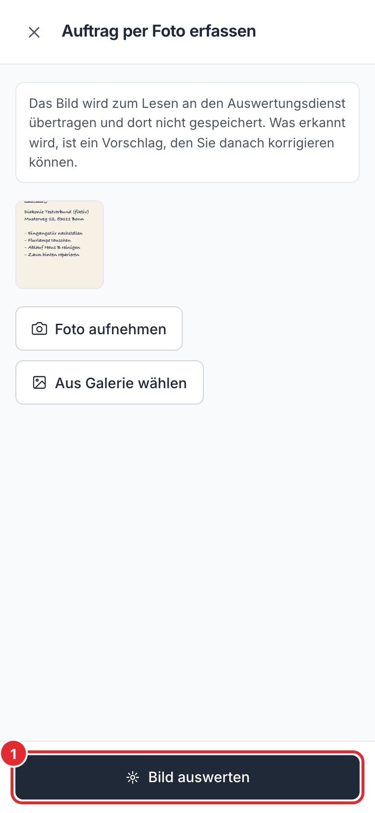
Prüfen und übernehmen
Kunde, Adresse und Aufgabe sind erkannt. Der Termin fehlt — der steht nicht auf dem Zettel. Die App rät ihn nicht.
Tippe auf Angaben übernehmen 1.
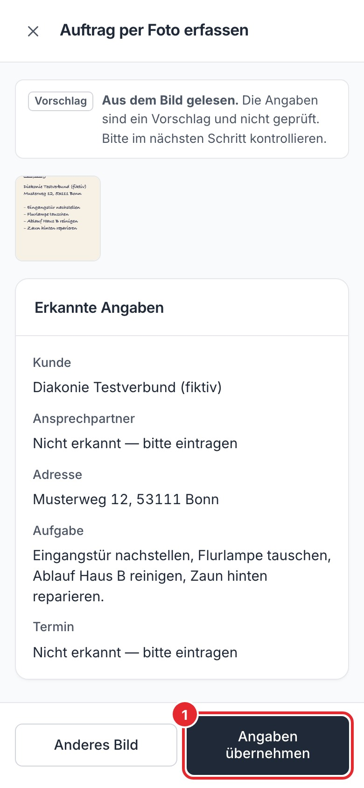
Fehlendes einsprechen
Tippe oben auf Per Sprache ergänzen 1. Der Knopf wird rot.
„Termin morgen um acht Uhr. Ansprechpartner Herr Neumann, Telefon 0228 5550120.“
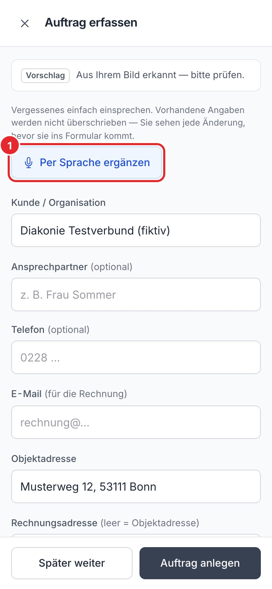
Aufnahme beenden
Fertig gesprochen? Tippe nochmal auf den Knopf 1.
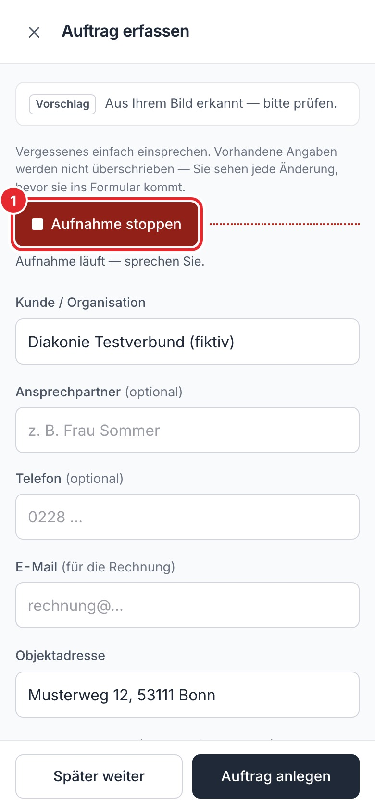
Ergänzung übernehmen
Die App zeigt, was sie eintragen will: Termin, Ansprechpartner, Telefon. Mit den Häkchen könntest du etwas abwählen.
Tippe auf Übernehmen 1.

E-Mail und Rechnungsadresse
| E-Mail (für die Rechnung) | rechnung@diakonie-test.example |
|---|---|
| Rechnungsadresse | Diakonie Testverbund, Verwaltung, Postfach 1020, 53111 Bonn |
Die Rechnung geht an die Verwaltung, gearbeitet wird am Musterweg (Objektadresse).
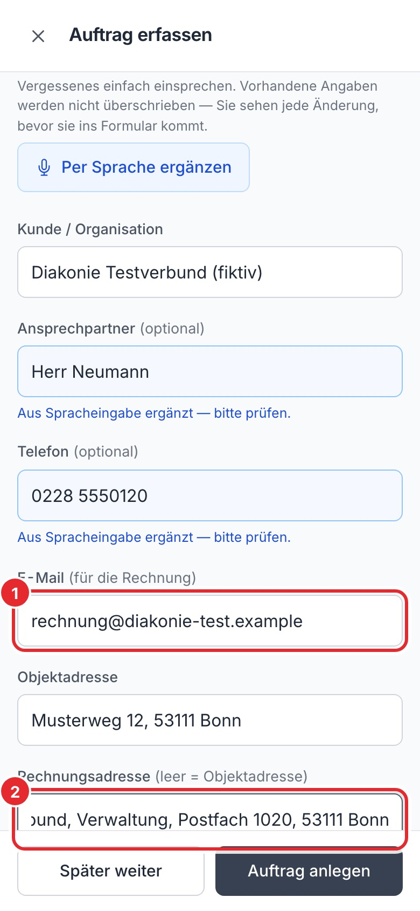
Kunde merken und anlegen
Setz das Häkchen Kunde für weitere Aufträge merken 1.
Tippe auf Auftrag anlegen 2.
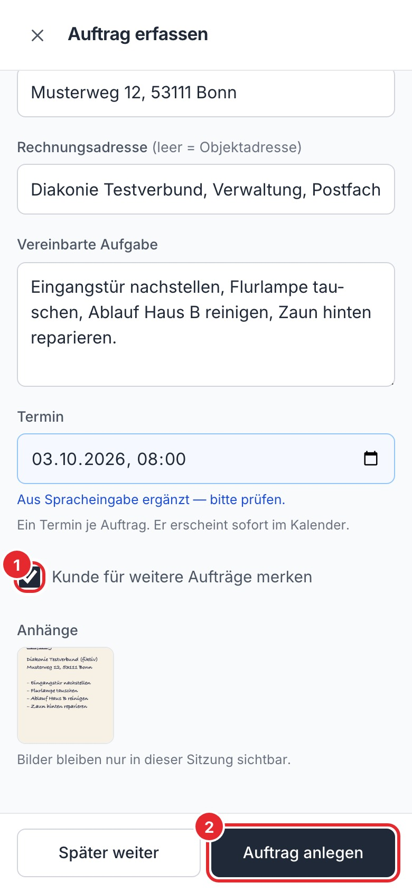
Arbeit starten
Die Auftragsakte geht auf. Stell dir vor, du bist jetzt beim Kunden.
Tippe unten auf Arbeit starten 1.
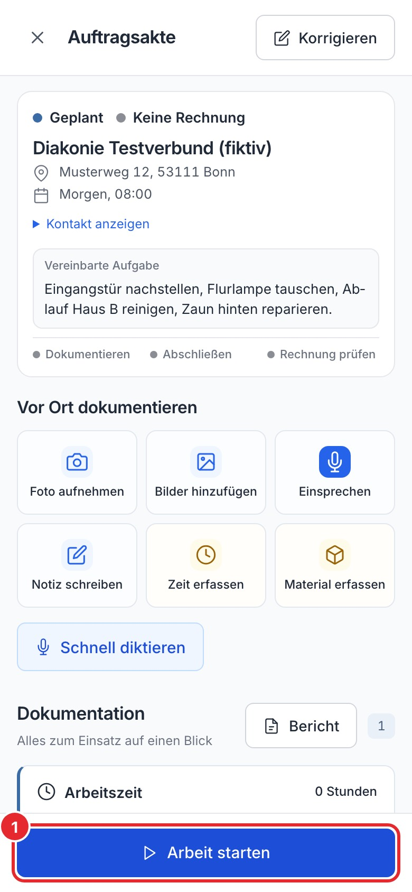
BZweiter Auftrag — per Einsprechen
Ein zweiter Kunde ruft an. Den sprichst du einfach ein.
Neuer Auftrag, Weg: Einsprechen
Schließ die Akte mit dem X oben links. Unten auf Home, dann Auftrag erfassen.
Tippe auf Einsprechen 1.
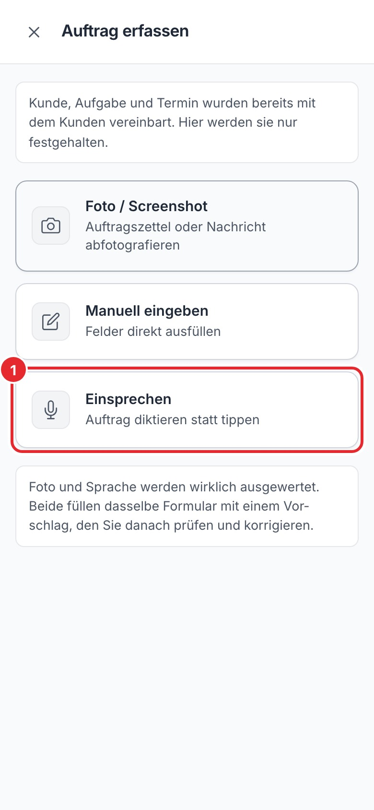
Aufnahme starten
Tippe auf Aufnahme starten 1 und sag in einem Satz:
„Bürohaus Kastanienallee, Kastanienallee 7 in 53175 Bonn. Heizungsverteiler im Technikraum prüfen und entlüften. Heute um 14 Uhr.“
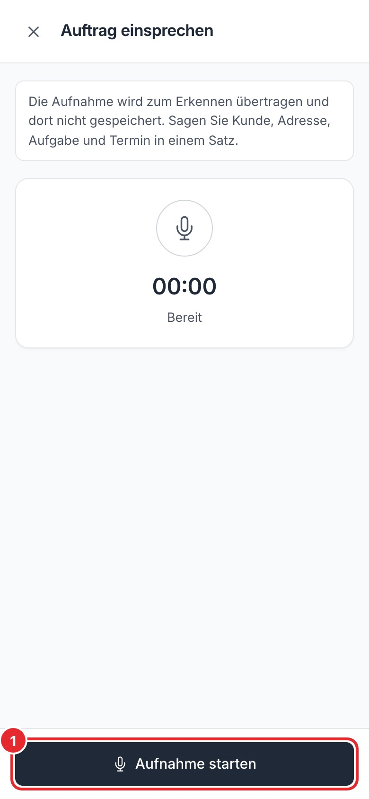
Aufnahme stoppen
Tippe auf Aufnahme stoppen 1.
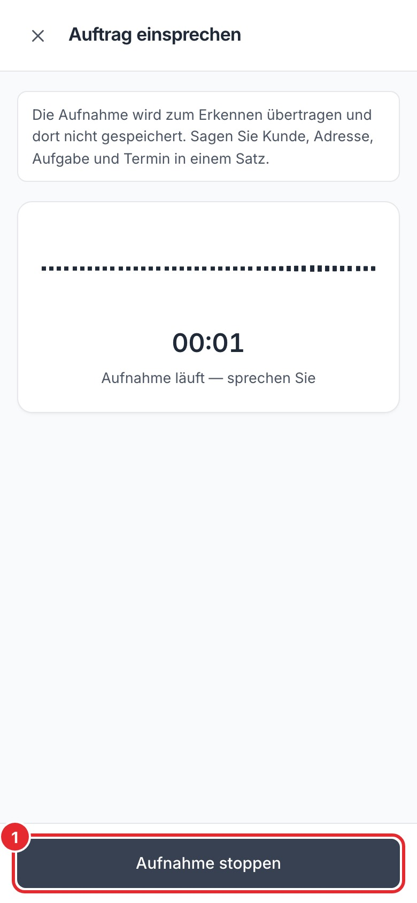
Prüfen und übernehmen
Oben steht, was die App gehört hat, darunter die Angaben daraus.
Tippe auf Angaben übernehmen 1.
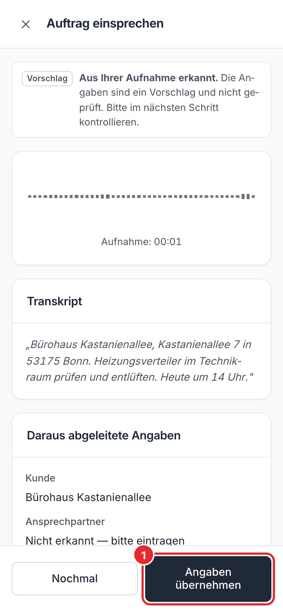
Anlegen und starten
Tippe auf Auftrag anlegen 1.
In der Akte gleich unten auf Arbeit starten. Jetzt sind zwei Aufträge gleichzeitig in Arbeit.
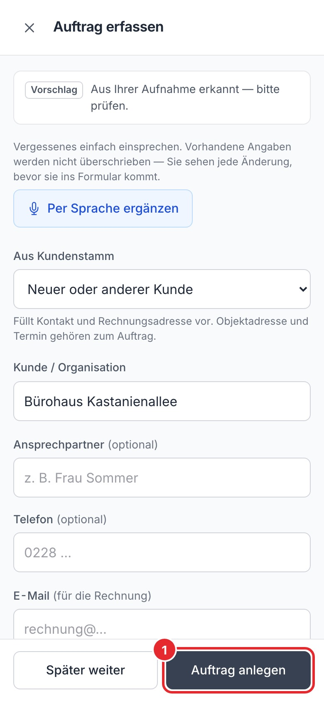
CZurück zur Diakonie — vor Ort dokumentieren
Du wechselst zurück zum ersten Auftrag und hältst fest, was du gemacht hast.
Zum ersten Auftrag wechseln
Akte mit X schließen. Auf Home ein Stück runterscrollen.
Unter Weitere laufende Arbeiten tippst du auf den Diakonie-Auftrag 1.
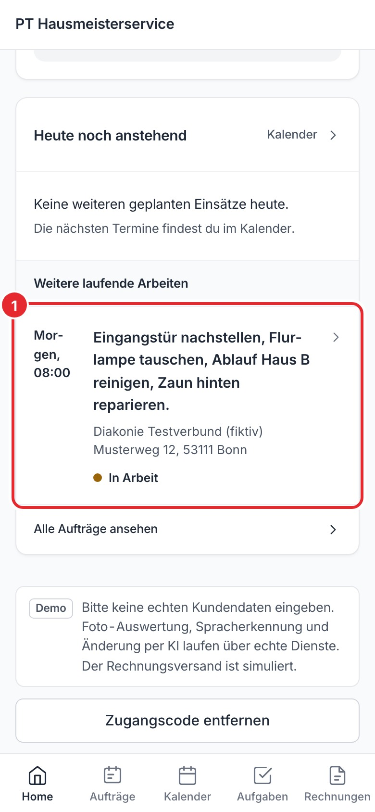
Foto dazu
Tippe auf Bilder hinzufügen 1 und nimm das Zaunfoto von oben — oder Foto aufnehmen und fotografier irgendetwas.
Die App gibt dem Foto selbst einen Namen, z. B. „Zaun hinten, Pfosten schief“.
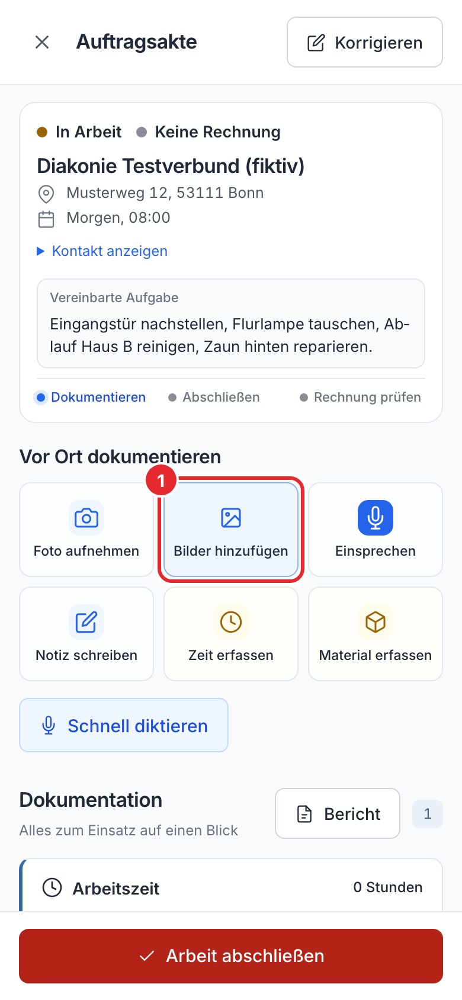
Alles in einem Satz erzählen
Tippe auf Schnell diktieren 1 und sag:
„Tür nachgestellt, Licht getauscht, Ablauf gereinigt und den Zaun repariert. Insgesamt viereinhalb Stunden, zwei Zaunlatten verbaut. Der zweite Zaunpfosten wackelt noch. Als Aufgabe: Zaunpfosten nachbestellen.“
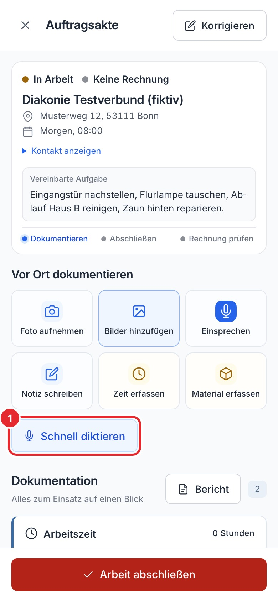
Aufnahme stoppen
Tippe auf Aufnahme stoppen 1.
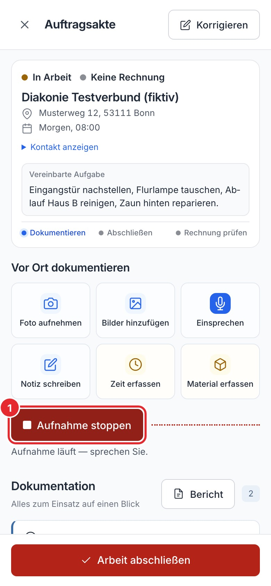
Prüfen und übernehmen
Die App hat sortiert: ausgeführte Arbeit, 4,5 Stunden, 2 Zaunlatten, offener Punkt (Zaunpfosten wackelt) — und unter Als Aufgabe gesagt „Zaunpfosten nachbestellen“.
Lass das Häkchen bei der Aufgabe 1 drin und tippe auf Übernehmen 2.
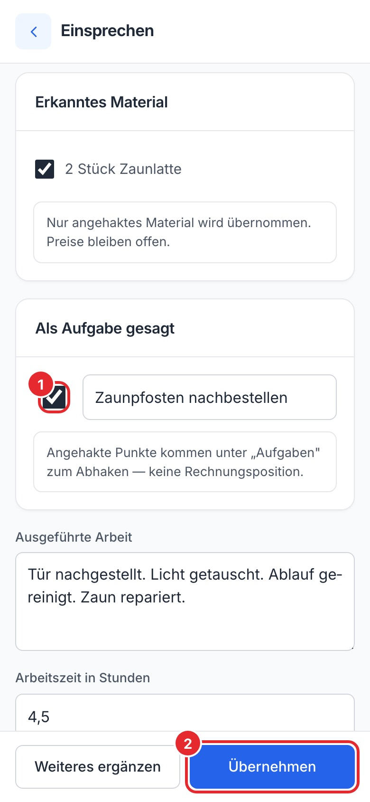
Etwas, das keine Arbeit ist
Tippe nochmal auf Schnell diktieren und sag:
„Der Hausmeister war informiert und hat den Keller aufgeschlossen.“
Stoppen. Die App fragt Wohin gehört das? — tippe auf Als Notiz 1.

Material von Hand
Tippe auf Material erfassen.
| Bezeichnung | Leuchtmittel LED E27 |
|---|---|
| Menge | 2 |
Tippe auf Speichern 3.
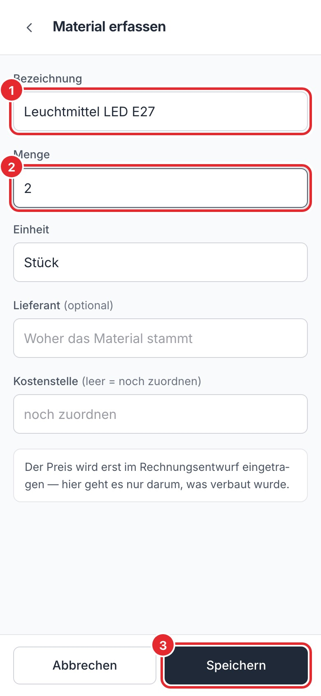
DZwischendurch — Notiz beim anderen Auftrag
Beim Bürohaus fällt dir etwas ein. Du schreibst es auf, ohne die Akte zu öffnen.
Notiz von der Startseite
Akte mit X schließen, Home. Oben steht das Bürohaus unter „Aktuell in Arbeit“.
Tippe dort auf Notiz 1.
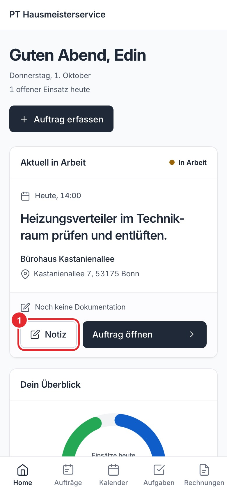
Notiz + Aufgabe
| Was ist vor Ort passiert? | Ventil im 2. OG klemmt, Ersatzventil bestellen. |
|---|
Statt tippen geht auch Per Sprache ergänzen.
Häkchen Auch als Aufgabe zum Abhaken merken 2, dann Notiz speichern 3.
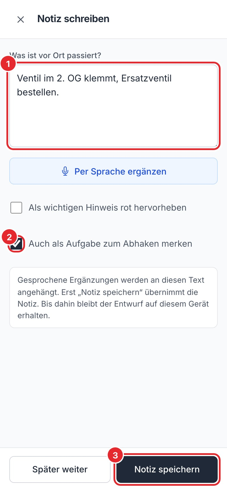
Aufgaben ansehen und abhaken
Unten auf Aufgaben 1. Da stehen jetzt beide: Zaunpfosten und Ventil.
Stell dir vor, du hast das Ventil bestellt: Hake Ventil … ab 2.
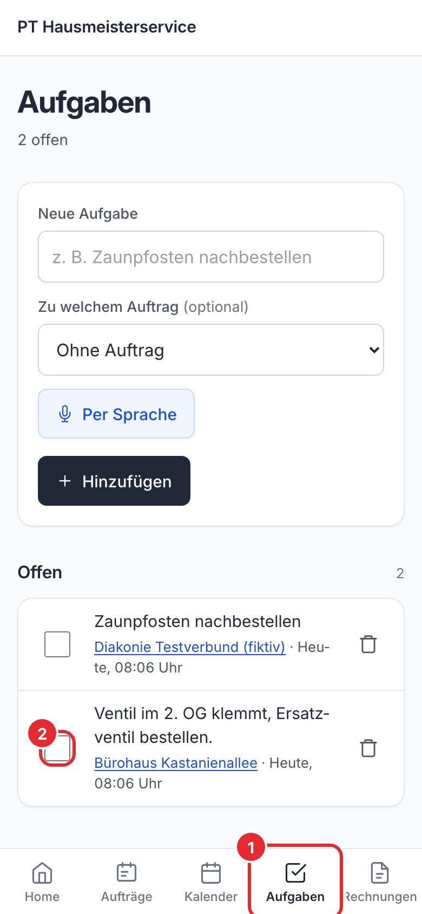
Erledigt
Die Aufgabe rutscht nach Heute erledigt und verschwindet nach einem Tag. Aus Versehen abgehakt? Einfach nochmal tippen.
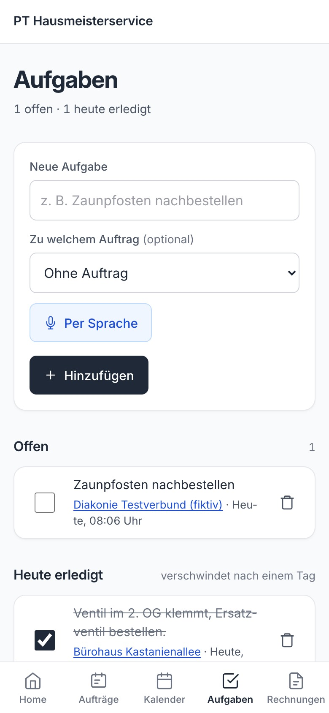
EKostenstellen verteilen
Vier Arbeiten, drei Kostenstellen — wie bei deinen Diakonie-Aufträgen.
Zurück zur Diakonie
Unten auf Aufträge, oben auf In Arbeit 1, dann den Diakonie-Auftrag 2.
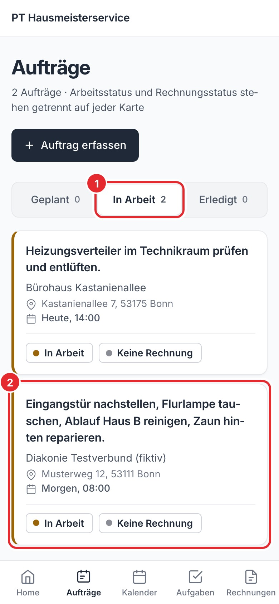
Tätigkeiten & Kostenstellen
In der Akte runterscrollen bis „Dokumentation“. Bei Arbeitszeit auf Tätigkeiten & Kostenstellen 1.
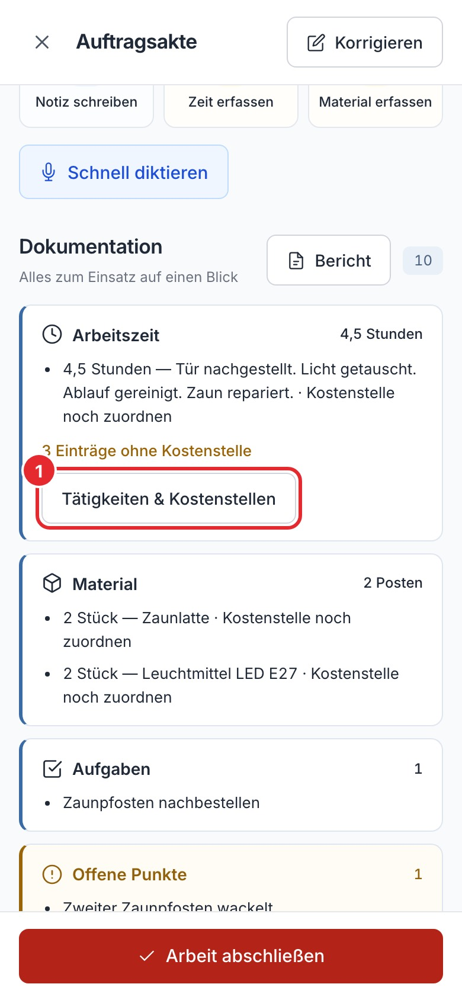
Teilen
Deine 4,5 Stunden stehen noch in einer Zeile.
Tippe auf Teilen 1. Die App macht aus deinem Satz vier Zeilen.
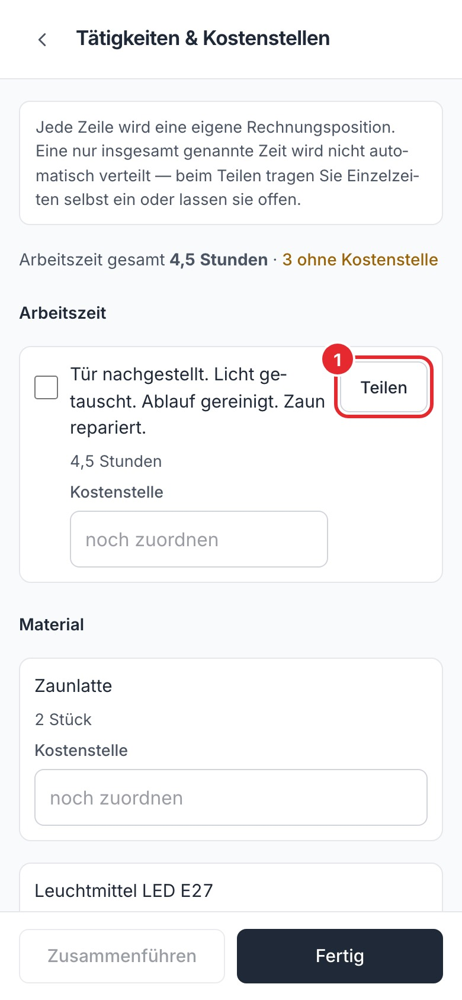
Stunden und Kostenstelle je Arbeit
| 1 · Tür nachgestellt — Stunden | 1 |
|---|---|
| 1 · Tür nachgestellt — Kostenstelle | KST 4100 Haus A |
| 2 · Licht getauscht — Stunden | 1 |
| 2 · Licht getauscht — Kostenstelle | KST 4100 Haus A |
| 3 · Ablauf gereinigt — Stunden | 1,5 |
| 3 · Ablauf gereinigt — Kostenstelle | KST 4200 Haus B |
| 4 · Zaun repariert — Stunden | 1 |
| 4 · Zaun repariert — Kostenstelle | KST 4300 Außenanlage |
Je Zeile oben Stunden 1, darunter Kostenstelle 2. Weißt du eine Stunde nicht, lass sie leer — die App schätzt nie.

Aufteilen
Tippe auf Aufteilen 1.
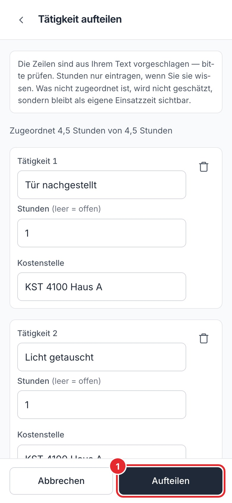
Material zuordnen
| Zaunlatte | KST 4300 Außenanlage |
|---|---|
| Leuchtmittel LED E27 | KST 4100 Haus A |
Dann Fertig 3.
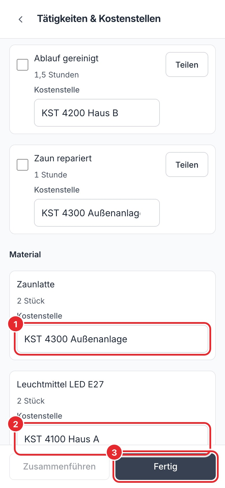
FEinsatzbericht, Unterschrift, PDF
Der Bericht baut sich aus deiner Dokumentation selbst.
Bericht öffnen
Tippe auf Bericht 1.
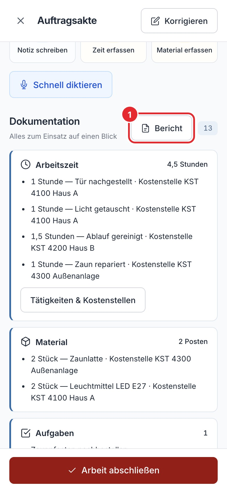
Durchlesen, bestätigen lassen
Scroll einmal durch: Arbeiten mit Stunden und Kostenstelle, Material, offene Punkte, Fotos. Unter „Was steht im Bericht?“ kannst du Fotos und Notizen an- und abwählen.
Tippe auf Bestätigen lassen 1.
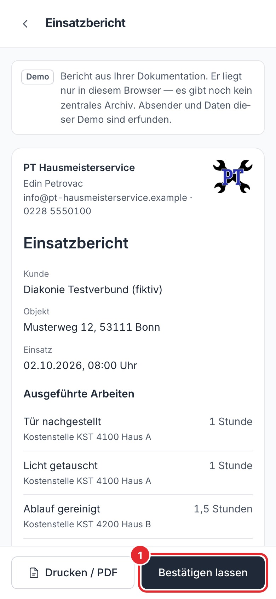
Unterschreiben lassen
| Name der Person, die bestätigt | Herr Neumann |
|---|
Mit dem Finger ins Feld unterschreiben 2, dann Speichern (Demo) 3.
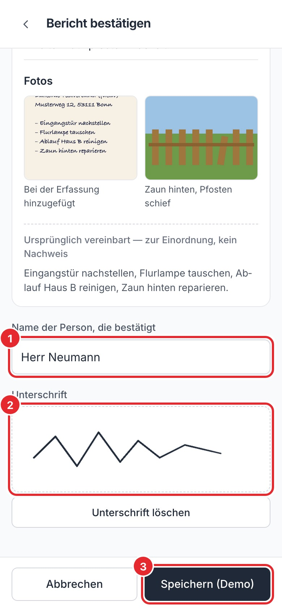
Als PDF sichern
Tippe auf Drucken / PDF 1. Am iPhone: im Druckfenster oben auf das Teilen-Symbol → In Dateien sichern. Am Android: Drucker Als PDF speichern.
Danach mit dem Pfeil oben links zurück in die Akte.
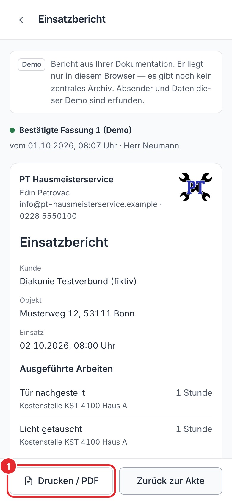
GArbeit abschließen
Abschließen
Tippe unten auf Arbeit abschließen 1.
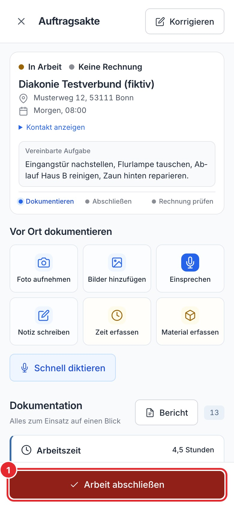
Ergebnis für den Kunden
| Ergebnis für den Kunden | Tür, Licht, Ablauf und Zaun erledigt. Zaunpfosten folgt. |
|---|
Tippe auf Als erledigt markieren 2.
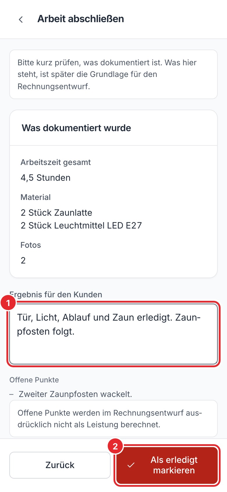
HRechnung — bis zum Ende
Die Rechnung entsteht aus dem, was du dokumentiert hast.
Rechnung erstellen
Tippe auf Rechnung erstellen 1.
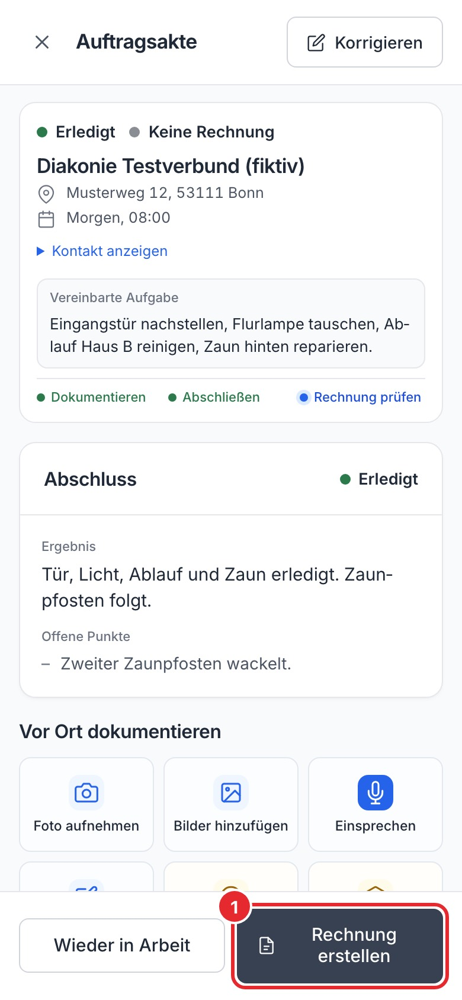
Preis per KI ändern
Jede Arbeit und jedes Material ist eine Zeile. 58 € ist nur ein Beispiel-Stundensatz.
Tippe bei der ersten Zeile auf das Funken-Symbol 1.
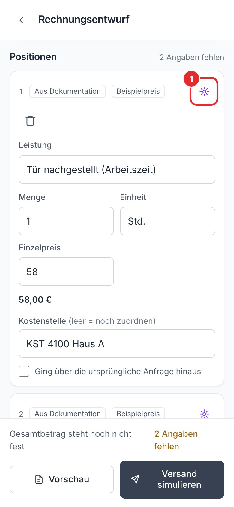
Sagen, was anders sein soll
| Was soll anders sein? | Setz den Stundensatz auf 62 Euro. |
|---|
Tippe auf Senden 2.
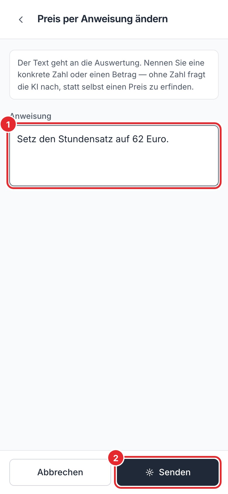
Vorschlag übernehmen
Die KI zeigt vorher und nachher. Sie ändert nichts, bevor du zustimmst.
Tippe auf Übernehmen 1.

Fehlende Preise eintragen
Runterscrollen: Bei Material ist der Preis offen (gelb). Solange etwas fehlt, gibt es keinen Gesamtbetrag.
| Zaunlatte → Einzelpreis | 9,50 |
|---|---|
| Leuchtmittel LED E27 → Einzelpreis | 4,90 |
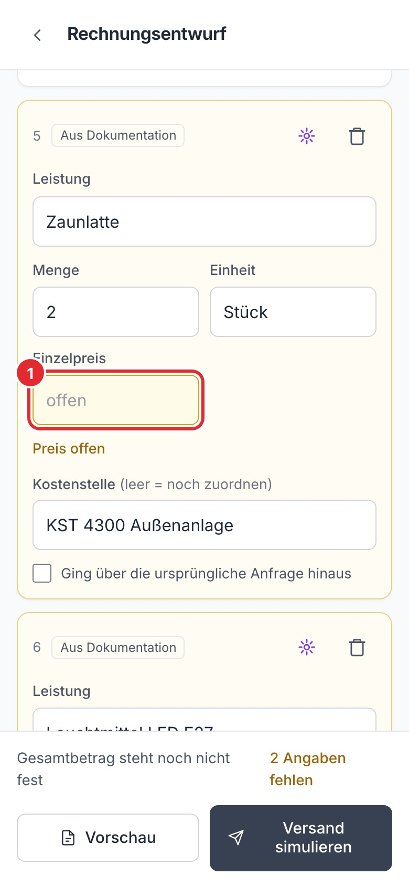
Vorschau
Jetzt steht unten der Gesamtbetrag.
Tippe auf Vorschau 1.
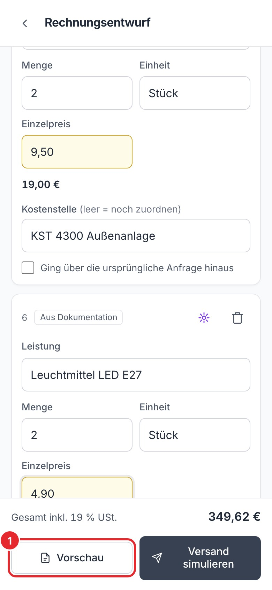
In der Vorschau noch etwas ändern
Ganz nach unten zu Noch etwas ändern? scrollen.
| Noch etwas ändern? | Die Zaunlatten haben 12 Euro das Stück gekostet. |
|---|
Tippe auf Senden 2.
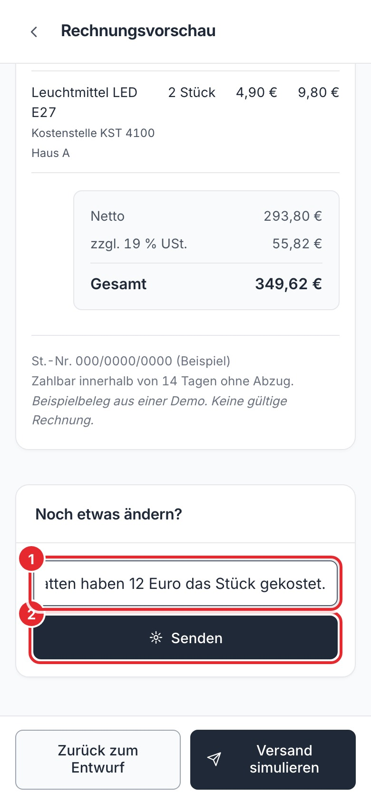
Übernehmen
Tippe auf Übernehmen 1.
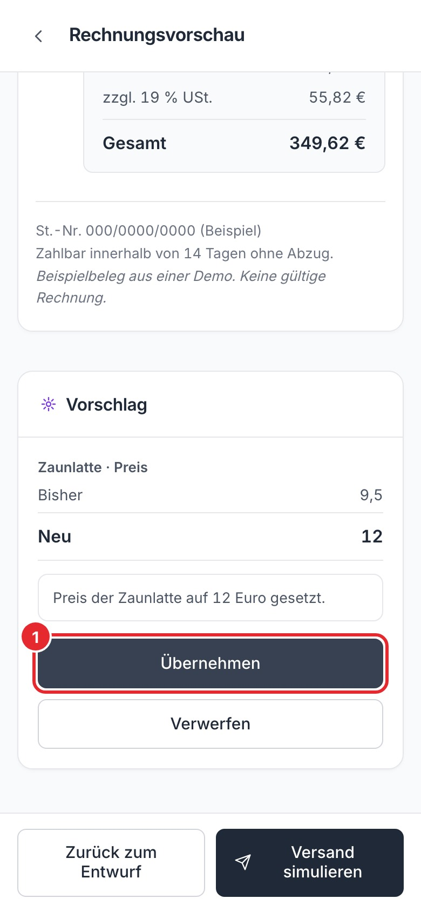
Rechnung stellen
Tippe auf Versand simulieren 1.
In der Probe geht nichts raus. Später legt sevDesk die Rechnung an und verschickt sie.
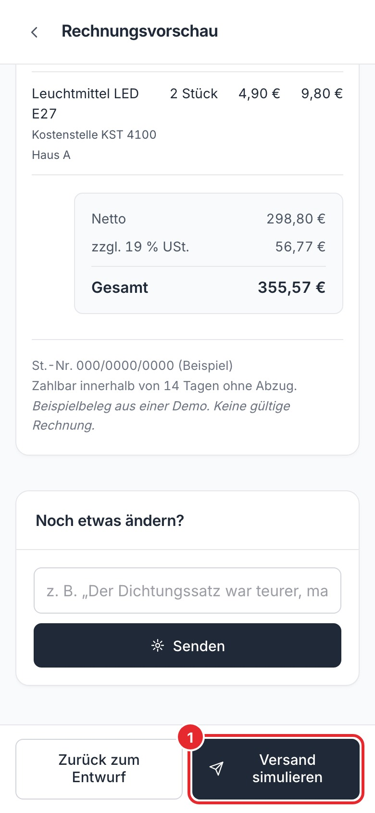
Bestätigen
Tippe auf Demo-Versand bestätigen 1.
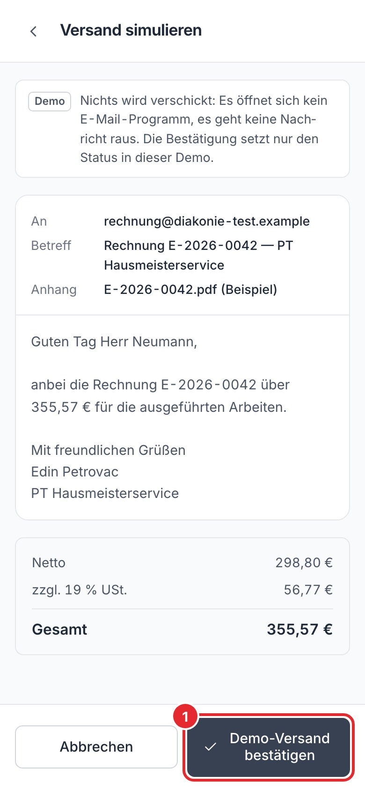
Zahlung vermerken
Die Rechnung ist jetzt festgeschrieben und ändert sich nicht mehr.
Der Kunde hat bezahlt? Tippe auf Zahlung vermerken 1. (Am PC siehst du das dann auf der Startseite im Geldverlauf.)
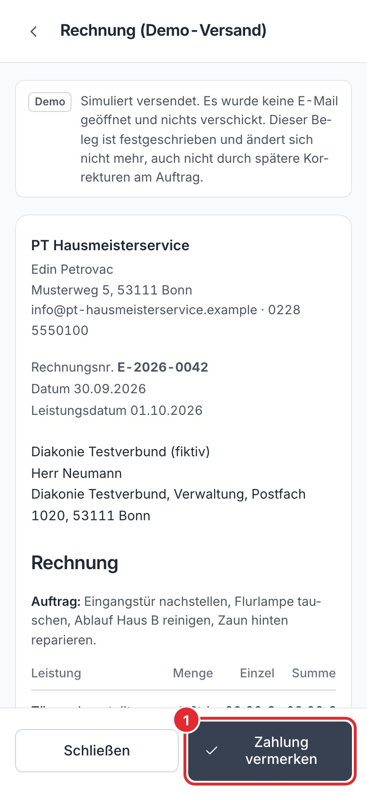
Geschafft
Schließ die Rechnung und tippe unten auf Rechnungen 1: Da steht deine Rechnung als versendet.
Der Betrag kann bei dir etwas anders sein, wenn die KI etwas anders verstanden hat — das ist in Ordnung.
Geschafft — du hast jede Funktion einmal benutzt.
Zusatzaufgabe ohne Anleitung: Schließ den Bürohaus-Auftrag selbst ab — Zeit erfassen, abschließen, Rechnung. Wenn das klappt, sitzt es.
Und dann: Was war einfach, was umständlich, was fehlt dir? Schreib oder sprich es in den Fragebogen, häng Bilder an, sammel mit dem Assistenten Ideen.
Zum Fragebogen Zur Übersicht aller FunktionenAlle Namen, Adressen und Zahlen sind erfunden. Stand: 30.09.2026 · M&H Assistenz